Sahnedeki müzisyen için
Bütün repertuvarın tek ekranda.
Şarkılar, akorlar, çalma listeleri, metronom ve seni izleyen bir davulcu. BC Stage sahneye çıktığın an için yapıldı.
iPad · iPhone · Android · Mac App Store bağlantısı bekleniyor
Buradan başla
BC Stage kiminle çalar?
Sekiz çeşit müzisyen, tek uygulama. Kendini seç.
Şarkıcı
Söz ve akor bir arada, bir metreden okunacak büyüklükte. Ton tek dokunuşla değişir, sahne notu kart olarak görünür.
Sahne sayfası →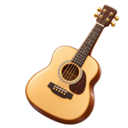
Gitarist
Akor sözlüğü ve çevrimler, Guitar Pro tabları, gamlar, arpejler, egzersizler. Kapo planıyla daha az barre.
Akor ve tab →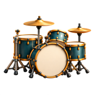
Davulcu ve perküsyoncu
Bir şarkının davulunu okut, tarzını bul. AI ile kendi kitini üret, 6.401 kalıpla çalış, konga ve bongo ekle.
Ritim →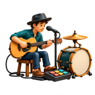
Tek kişilik grup
Davul ızgarası, looper ve metronom aynı saati tutar. Pedalla fill, final ve looper kaydı, eller çalgıda.
One Man Band →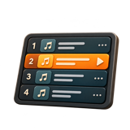
Grup
Lider şarkıyı açar, aynı Wi-Fi'daki herkes izler. Bas-konuş, anketler, sahne notları, internet gerekmez.
Grup senkronu →Öğrenci
Ders videosunda zor yeri döngüye al ve yavaşlat. Hız antrenörü, çalışma programı, kayıtlı çalışmalar.
Video çalışma →Karaoke ve vokal çalışan
Vokali kapat, kelime kelime dolan sözle söyle. Hız ve ton ayarı, satıra dokunup atlama.
Karaoke →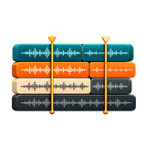
Aranjör ve tab yazan
iReal tarzı akor şemaları, aksak usuller, röprizler. Tab yaz, kayıpsız kaydet, BC ID ile kişiye gönder.
Aranje ve tab →Özellikler
Bir konserin ihtiyacı olan her şey
On bir sekme, tek saat. Birlikte çalan her şey aynı zamanı tutar.
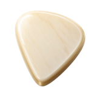
Tablar Aranjeler Karaoke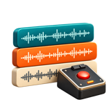
Looper Video AI Davul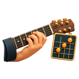
Akor Bulma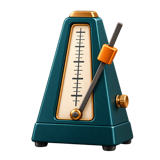
Metronom Bul One Man Band01 · Sahne
Bir metreden oku
Şarkılar ve sahne sayfası
Bölümler üstte bir bantta, akorlar satırların üstünde, şarkının tamamı ekrana sığdırılmış.
Çalma listeleri
Gecenin şarkılarını sırala, birini saniyede değiştir, her şarkıya not düş.
Grup senkronuVIP
Lider şarkıyı açar, aynı Wi-Fi'daki bütün cihazlar izler. İnternet de sunucu da gerekmez.
PedalVIP
Bluetooth sayfa çevirici ve MIDI pedal: sonraki şarkı, sonraki bölüm, ritmi başlat/durdur, looper kaydı. Ellerin çalgıda kalır.
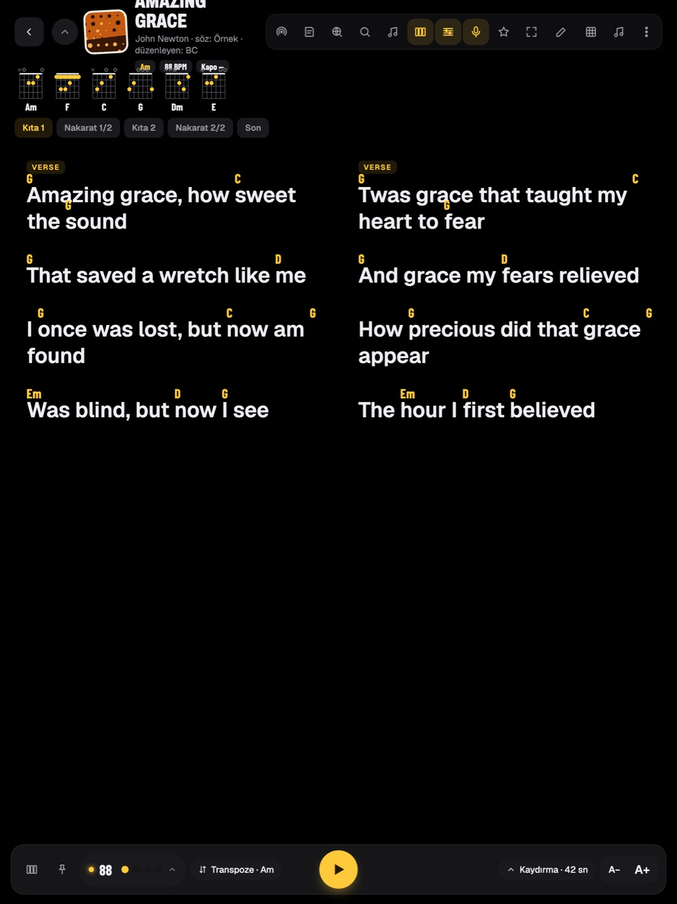
02 · Karaoke ses işleme: iOS · Mac
Karaoke
Gerçek grubun üstüne söyle.
Bir ses dosyasını şarkıya bağla. BC Stage vokali çıkarır, sözleri müziğe oturtur ve söylendikçe doldurur.
Çizim · gerçek ekran canlı çekimle gelecek
03 · Akor Bulma iPad · Mac
Akor Bulma
Şarkıyı ver, şemasını al.
BC Stage bir ses dosyasını dinler, akorlarını ve sözlerini bölüm bölüm yazar. Hiçbir şey cihazından çıkmaz.
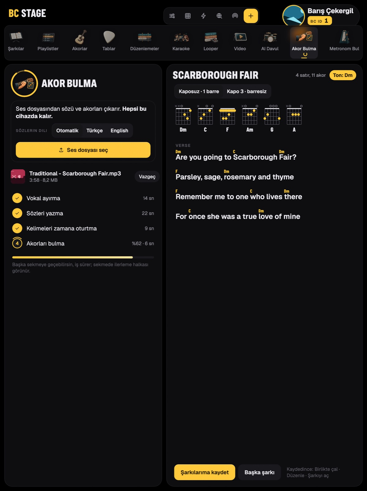
04 · Video
Video
Zor yeri döngüye al.
Galerinden bir ders videosu aç. Zor yeri dalga şeridinde işaretle, yavaşlat, ellerin öğrenene kadar tekrar çal.
05 · Metronom Bul iPad · Mac
Metronom Bul
Metronom şarkıyı öğrenir.
BC Stage'e bir kayıt ver. Tempoyu, ölçüyü ve ilk vuruşu bulur, sonra şarkıyla birlikte tık atar.
06 · Ritim
Seni bekleyen bir davulcu
AI DavuliPad · Mac
Kick, snare, hi-hat ve bütün kitleri cihazda üret, 17 tarzda 6.401 kalıpla çal.
One Man BandVIP
Canlı çalınan beş kanallı ızgara: A/B/C varyasyonları, fill, final, aksak ölçüler, MIDI groove.
Looper
Metronoma kilitli döngüler. Geç girsen bile BC Stage seni birinci vuruşa oturtur.
Şarkıdan davuliPad · Mac
BC Stage kaydın davulunu okur, 4–6 tarz adayı çıkarır, seçtiğini kendi kitinle çalar.
Yakında
Milimetrik dokunuş
BC Fareyakında
Ekranda bir imleç ve küçük bir dokunmatik yüzey: parmağın hiçbir şeyi kapatmadan milimetrik dokun, sürükle ve kaydır. Söz düzenlerken, akor yazarken, ince ayarda.
Hassas ayaryakında
Düzenleyicide bir işarete uzun bas, milisaniyesine kadar kaydır.
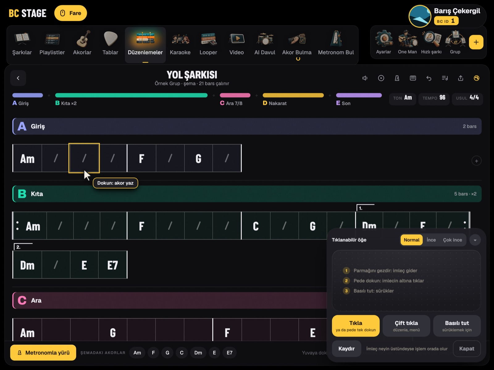
BC Pano · topluluk
BC Pano
Sahnedeki müzisyenin ana sayfası.
Sıradaki konserin, ekipmanın, grupların ve çevrendeki müzisyenler tek sayfada. BC Pano ücretsiz ve isteğe bağlı: istediğin zaman bir BC hesabı açarsın, açmasan da uygulamanın tamamı çalışır.
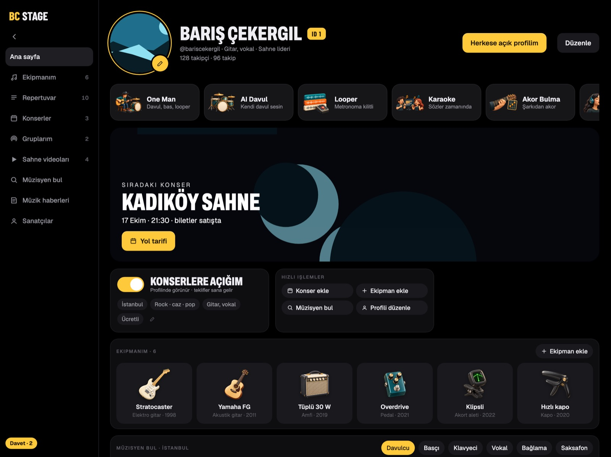
Seni bulmanın iki yolu
Senin seçtiğin ad: 3–20 karakter, küçük harf, rakam, nokta ya da alt çizgi. Müzisyenler seni bununla bulur. Sonra değiştirebilirsin, hiçbir bağ kopmaz.
Kayıt sırasıyla verilir: ilk kaydolan 1, sonraki 2. Küçük bir numara, en baştan beri burada olduğunun izi. Birine tab gönderirken @adını ya da ID numarasını yazman yeter.
internet BC Pano için BC hesabı ve internet gerekir. BC Stage'in geri kalanı ikisi olmadan da çalışır.
Ekranlar
Uygulamanın kendisi
iPad'de BC Stage 3.0, telifi bitmiş şarkılarla.
Bütün özellikler
En ince ayrıntısına kadar
BC Stage'in bugün yaptığı her şey, alan alan. İşaretler neyin VIP olduğunu, neyin iPad ya da Mac istediğini ve neyin internet gerektirdiğini gösteriyor.
Her gece başka bir sahne.
buraya senin konser fotoğrafın gelebilirFiyat
Ücretsiz başla.
VIP modeli yenileniyor: fiyat ve sınırlar yer tutucu
Ücretsiz
- 30 şarkı, 2 liste, 10 aranje
- Akorlar, metronom, söz arama
- Yedekleme ve dışa aktarma
VIP
- Tek ödeme, abonelik yok
- Sınırsız şarkı ve liste
- One Man Band, grup senkronu, pedal
- Gamlar, arpejler, egzersizler
Önce dene
- Bütün VIP özellikleri üç gün ücretsiz
- One Man Band'i ilk açtığında başlar
Yardım
İlk şarkıdan sahneye
Şarkı ekle
Adını yaz, akorları yapıştır ya da bir dosya al.
Ayarla
Ton, kapo, tempo ve bölümler. BC Stage hepsini hatırlar.
Listeyi kur
Gecenin şarkılarını sürükleyip sırala.
Sahneye çık
Sahne sayfasını aç. Pedal ya da bir kaydırma seni sonraki şarkıya götürür.
Kılavuz
Şarkılar ve sahne sayfası→ Listeler ve grup senkronu→ Akor Bulma ve karaoke→ Metronom ve looper→ One Man Band ve AI Davul→ Pedal ve MIDI→ Yedek ve hesap→Sık sorulanlar
Sahnede internet gerekiyor mu?
Hayır. Şarkılar, sahne sayfası, metronom, davul, looper ve grup senkronu internetsiz çalışır. Grup senkronu için cihazların aynı Wi-Fi ağında olması yeter.
Grup senkronu internetsiz çalışır mı?
Evet. Lider kendini yerel ağda duyurur, öteki cihazlar ona doğrudan bağlanır. Hiçbir şey sunucuya gitmez. Bütün cihazlar aynı Wi-Fi ağında olmalı.
Ses dosyalarım bir yere yükleniyor mu?
Hayır. Akor bulma, vokal ayırma ve tempo bulma cihazında çalışır.
Hangi pedallar çalışıyor?
Klavye gibi davranan Bluetooth sayfa çeviriciler (AirTurn, PageFlip tarzı) ve Bluetooth MIDI pedallar. "Öğret"e bas, istediğin düğmeye dokun.
Bazı özellikler neden yalnız iPad ve Mac'te?
Akor Bulma, AI Davul ve Metronom Bul cihazda büyük modeller çalıştırıyor, telefonların belleği bunlara henüz yetmiyor. Vokal ayırma ve söz hizalama iPhone, iPad ve Mac'te var, Android'de henüz yok.
VIP aldım, yeni cihaza nasıl taşırım?
Aynı mağaza hesabıyla gir ve ayarlarda Satın alımları geri yükle'ye dokun.
İnternetsiz çalışır
- Kütüphane, sahne sayfası, listeler
- Metronom, One Man Band, looper
- Grup senkronu, bas-konuş, anketler (aynı Wi-Fi)
- Vokal ayırma, Akor Bulma, Metronom Bul
- Akor sözlüğü, egzersizler, video çalışma
- Yerel yedek ve geri yükleme
İnternet ister
- Söz ve akor getirme
- Kendi iCloud, Dropbox ya da Google Drive hesabına bulut eşitleme
- İnternetten tempo bulma, sanatçı kartı
- BC hesabı, BC Pano, kişiye tab gönderme
- İlk kullanımda model indirme: söz tanıma, hizalama, AI Davul (sonra internetsiz)
Hakkında
Bir müzisyenin elinden
Gitarist · vokalist · gitar eğitmeni
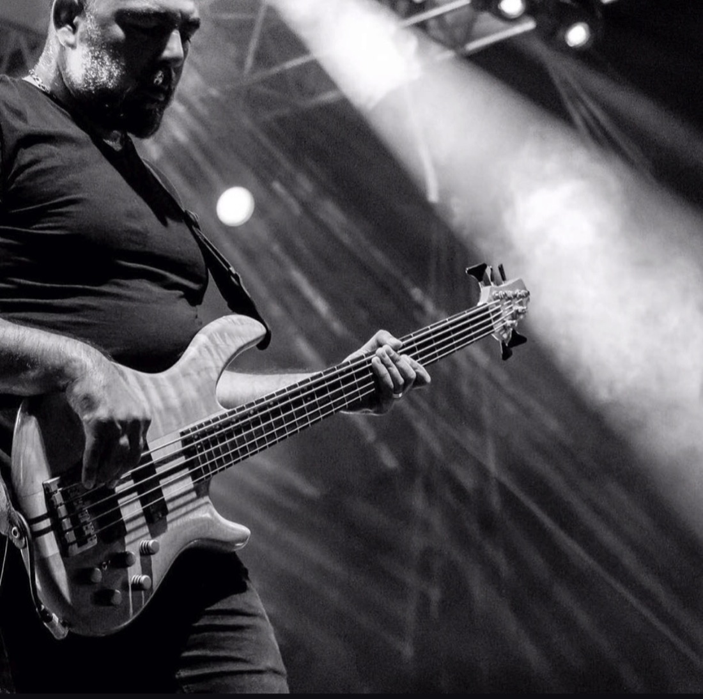
1977 İstanbul doğumlu Barış Çekergil, gitarist, vokalist ve gitar eğitmenidir. Yirmi yedi yılı aşkın profesyonel sahne deneyiminin yanı sıra stüdyo çalışmaları, müzik eğitimi ve dijital içerik üretimiyle müziğin farklı alanlarında çalışmalarını sürdürmektedir.
Fethiye'de yaşayan Çekergil, kendi adını taşıyan YouTube kanalında gitar dersleri ve müzikal deneyimlerini paylaşır. Eğitimlerinde tekniği, armoniyi ve şarkı üzerinde uygulamayı bir araya getirerek müzisyenlerin öğrendiklerini kendi çalımlarına taşımasına odaklanır.
Müzik teknolojilerine duyduğu ilgi, onu sahnede karşılaştığı ihtiyaçlara yönelik araçlar geliştirmeye yöneltmiştir. Geliştirdiği BC Stage; repertuvarı, sözleri, akorları ve canlı performans araçlarını bir araya getiren, doğrudan sahne deneyiminden doğmuş bir uygulamadır.
Çekergil'in çalışmalarının merkezinde, müzisyenin hazırlığa ve teknik ayrıntılara harcadığı zamanı azaltıp müziğe daha fazla alan açmak vardır.
Teşekkürler
Başkalarının emeğiyle
BC Stage açık araştırmaların ve özgür ses kütüphanelerinin üstünde duruyor. Bunu mümkün kılan insanlar:
Ultimate Vocal Remover · Anjok07, aufr33
BC Stage'in ayırdığı her vokal onların modelleriyle ayrılıyor. Teşekkürler.
Ses ve söz
- Whisper · whisper.cppOpenAI, Georgi Gerganov · söz tanıma
- wav2vec2mpoyraz, jonatasgrosman, oliverguhr, fairseq · söz hizalama
- SpleeterDeezer · davul ayırma
Ritim ve zaman
- Beat This!CPJKU · tempo ve vuruş bulma
- Onsets and Frames DrumsMagenta, E-GMD · davul yazma
- Stable Audio Open SmallPowered by Stability AI · AI Davul
- Signalsmith Stretchton ve hız
Akor ve tab
- lv-chordiaMusic X Lab · Jiang, Chen, Li, Xia · akor tanıma
- alphaTabCoderLine · gitar tab
- GeneralUser GSS. Christian Collins · tab ses bankası
Sesler
- DRSKitDrumGizmo & DRSDrums · ride
- OLPC · Open Path Musickonga, tumba
- VCSL · Sonivoxel perküsyonu, ses bankası
Freesound
- kwazi · Geoff-Bremner-Audioshaker loop'ları
- funkologictef loop'u
- Nox_Sound · johnnyguitar01oda kayıtları
Ve
- Flutter topluluğuuygulamadaki bütün açık paketler
- Deneyenlerimizher hatayı sahneden bildirenler
Forum
Sen yaz, biz yapalım.
Bir hata bildir, eksik olanı iste, bir fikir paylaş. Uygulamada kullandığın BC hesabınla gir.
İstediğin fikirleri oyla. En çok oy alanlar sıraya önce girer, her kartta oy sayısı görünür.
Sırada
Yapılıyor
Yapıldı
Forum kuralları: nazik ol, her konuya bir başlık, şarkı sözü paylaşma (telif).
BC Stage'e destek ol
Birlikte büyütelim
BC Stage'i bir müzisyen, sahne aralarında yapıyor. Reklam yok. Verini satmıyoruz. Şarkıların için bir sunucumuz bile yok: hepsi senin cihazında ve senin bulutunda duruyor.
İlk yolu kendi imkânlarımızla yürüdük. Böyle kalmasının bir bedeli var: test edilecek cihazlar, mağaza ücretleri, her özelliğe giden saatler.
BC Stage sahnede işine yarıyorsa, sonraki yolu bizimle yürüyebilirsin. Her destek bir sonraki özelliği yaklaştırır.
Türkiye'den destek olacaklar için: Patreon kartla dolar üzerinden ödeme alır, bankan döviz ya da yurt dışı işlem ücreti kesebilir.
İletişim
Bize yaz
Daha hızlı yanıt için
- Cihazın ve BC Stage sürümü (Ayarlar → Hakkında)
- Neye, hangi sırayla dokunduğun
- Bir ekran görüntüsü ya da kısa ekran kaydı
Türkçe ve İngilizce yanıtlıyoruz.